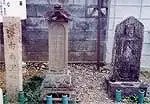
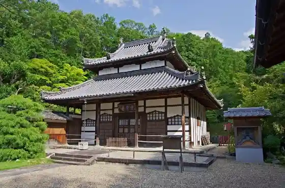
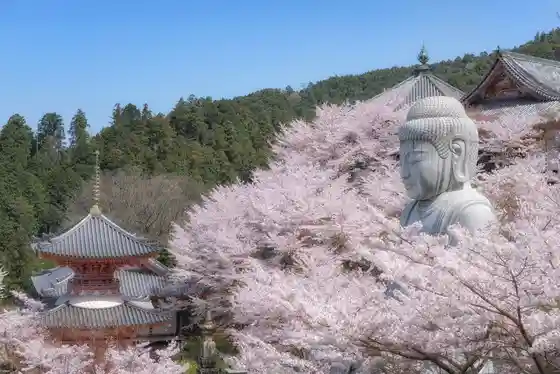
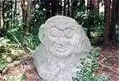
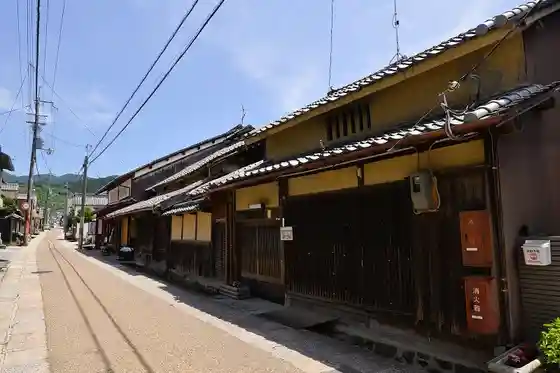

Takatori
Takatori · Nara
Takatori
Highlighted on the Nara map.

Sights
O Sato, Sawa City no Haka
Koun Zendera

Tsubo Saka Tera

Saruishi (Takatori)

Takatori Tosa

Takatori Tosa Streetscape
Takatori Castle Ruins